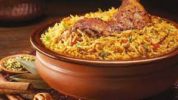

Egypt is characterized by having many delicious dishes.
One of the most famous of these dishes is the molokhia dish.
It is an ancient Egyptian meal for which Egypt is famous,
and this distinctive dish is found in every Egyptian home.
Ingredients
4 cup chicken broth
3 bay leaves
1 onion, peeled and diced
1 Tbsp tomato paste
Salt and pepper
2 lb(s) prepared molokhia leaves, purchased frozen and thawed
6 clove garlic, peeled and minced
2 Tbsp cumin seed
½ cup olive oil
Juice of 1 lemon
Recipe
Pour the broth into a soup pot and add the bay leaves, onion, tomato paste,
salt and pepper and bring to a simmer.
Add the molokhia and season with salt and pepper.
Stir well. Simmer for 20 minutes
Pour the olive oil into a large skillet over medium high heat.
Stir in the garlic and cumin seed.
Continue stirring or swirling the pan. When the garlic is golden brown,
pour the hot oil over the surface of the simmering molokhia.
Squeeze the lemon juice in and serve immediately.

INDIA
Delicious Indian Biryani. It is one of the most famous Indian dishes.
India is famous for this dish and it is one of the main and favorite meals of the Indians
Ingredients
1 cup boiled basmati rice
600 gm chicken
1/2 teaspoon mint leaves
1 tablespoon garam masala powder
salt as required
1 teaspoon saffro
2 tablespoon refined oil
1 tablespoon bay leaf
3 green cardamom
1 black cardamom
2 clove
1 teaspoon cumin seeds
2 onion
4 green chillies
1 teaspoon turmeric
1 tablespoon ginger paste
1 teaspoon red chilli powder
1/2 tablespoon ginger
water as required
Recipe
Prepare Saffron And Kewra Water
To make delightful chicken biryani, soak saffron in water to prepare saffron water.
Next, mix kewra drops in water and mix well to make kewra water.
Saute Onions And Tomatoes For 2-3 Minutes
In the meanwhile, heat refined oil in a deep bottomed pan. Once the oil is hot enough.
Add cumin seeds, bay leaf, green cardamom, black cardamom, cloves in it, and saute for about a minute.
Then, add chopped onion in it and saute until pink. Now, add chicken into it with slit green chillies,
turmeric, salt to taste, ginger garlic paste, red chilli powder, and green chilli paste.
Mix well all the spices and cook for 2-3 minutes. Then, add hung curd into it
Cook Biryani On Low Heat For 5-6 Minutes
Turn the flame to medium again and add garam masala in it along with ginger julienned,
coriander and mint leaves.
Add kewra water, rose water and saffron water in it. Cook till the chicken is tender
Serve Hot Chicken Biryani With Your Favourite Chutney Or Raita
Then add 1 cup cooked rice and spread evenly. Then add saffron water and pour ghee over it.
Cook for 15-20 minutes with closed lid and garnish with 1 tbsp fried onions and coriander leaves.
Serve hot chicken biryani
KINGDOM OF SAUDIA ARABIA
The distinctive Kabsa dish is famous in the Arab Gulf countries, especially the Kingdom of Saudi Arabia.
The Kabsa dish is the most famous dish in Saudi Arabia,
and is found in every Saudi home and in all the homes of the Arabian Gulf
Ingredients
½ teaspoon saffron
¼ teaspoon ground cardamom
½ teaspoon ground allspice
¼ teaspoon ground white pepper
½ teaspoon dried whole lime powder
¼ cup butter
1 onion, finely chopped
6 cloves garlic, minced
1 (3 pound) whole chicken, cut into 8 pieces
¼ cup tomato puree
1 (14.5 ounce) can diced tomatoes, undrained
3 carrots, peeled and grated
1 pinch ground nutmeg
1 pinch ground cumin
1 pinch ground coriander
salt and freshly ground black pepper to taste
3 ¼ cups hot water
1 cube chicken bouillon
2 ¼ cups unrinsed basmati rice
¼ cup raisins
¼ cup toasted slivered almonds
Recipe
Mix together the saffron, cardamom, cinnamon, allspice, white pepper, and lime powder in a small bowl,
and set the spice mix aside
Melt the butter in a large stock pot or Dutch oven over medium heat. Stir in the garlic and onion;
cook and stir until the onion has softened and turned translucent, about 5 minutes.
Add the chicken pieces and brown them over medium-high heat until lightly browned,
about 10 minutes. Mix in the tomato puree
Stir in the canned tomatoes with their juice, the grated carrots, whole cloves, nutmeg, cumin,
coriander, salt, black pepper, and the Kabsa spice mix.
Cook for about 3 minutes; pour in the water, and add the chicken bouillon cube
Bring the sauce to a boil, then reduce the heat to simmer and cover the pot.
Simmer until chicken is no longer pink and the juices run clear, about 30 minutes.
Gently stir in the rice. Cover the pot and simmer until rice is tender and almost dry, about 25 minutes;
add the raisins and a little more hot water, if necessary.
Cover and cook for an additional 5 to 10 minutes or until the rice grains are separate
Transfer the rice to a large serving platter and arrange the chicken pieces on top.
Sprinkle the toasted slivered almonds over the dish
ITALY
Italy has been famous since ancient times for its unique pasta dish.
Pasta is one of the most distinctive and ancient Italian dishes,
and it spread all over the world,
as Italy excelled in providing special pasta dishes.
Ingredients
1 tablespoon olive oil
1 large onion, chopped
3 large cloves garlic, minced
2 (28 ounce) cans tomato sauce
1 (28 ounce) can diced tomatoes
¾ cup Merlot wine
1 (6 ounce) can tomato paste
3 tablespoons chicken bouillon granules
3 tablespoons dried basil leaves
3 tablespoons Italian seasoning
Recipe
Heat olive oil in a large saucepan over medium heat.
Cook and stir onion and garlic in hot oil until the onion is translucent, 5 to 7 minute
Sit tomato sauce, diced tomatoes, wine, tomato paste, chicken bouillon granules,
basil, Italian seasoning, salt, and pepper with the onion mixture.
Bring the mixture to a boil, reduce heat to low, and cook at a simmer, stirring frequently, for 1 hour
TURKEY
Turkish borek is one of the most popular dishes in Turkey.
Many tourists go to Turkey to eat its distinctive dishes, especially borek.
It is a very special dish in Turkey.
Ingredients
1 egg, lightly beaten
1 bunch fresh parsley, minced
2 cloves garlic, minced
¾teaspoon crushed red pepper
6 ounces smoked Gouda cheese, shredded
6 ounces Emmentaler cheese, finely shredded
12 sheets phyllo dough
1 ½ cups unsalted butter, melted
Recipe
In a medium bowl, whisk together egg, parsley, garlic and crushed red pepper.
Mix in Gouda and Emmentaler
One sheet at a time, place phyllo dough on a flat surface and brush with about 1 tablespoon butter.
Cut lengthwise into 4 strips. Place a rounded teaspoon of the egg mixture at one end of each strip.
Fold corner of strip over the filling, forming a triangular fold.
Continue folding the length of the strip in triangular folds to form a small stuffed triangle.
Repeat with remaining phyllo dough.
Preheat oven to 350 degrees F (175 degrees C). Lightly butter a large baking sheet
Arrange stuffed phyllo triangles in a single layer on the prepared baking sheet.
Bake in the preheated oven 30 minutes, or until lightly browned. Serve warm
.jpg)
.jpg)
.jpg)